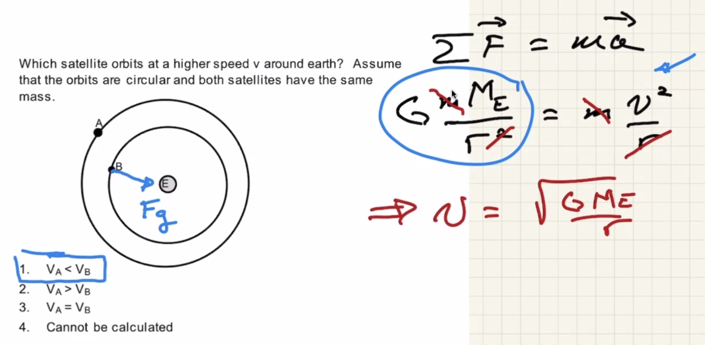
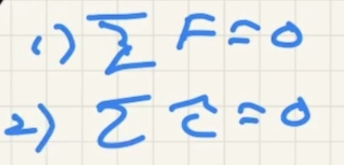
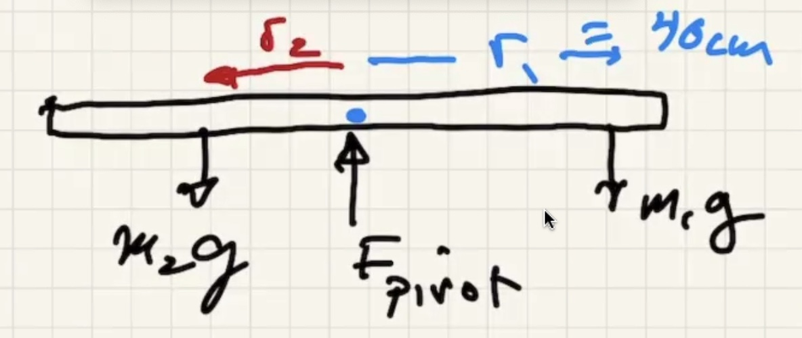

Anouncements
Todays new material
Clicker questions
The mass of the satellites actually don't matter
The smaller the radius the faster the satelite.

The bigger the radius the longer the period.

Discussion
Last chapter we introduced centripetal acceleration. We briefly introduced what happens when the speed doesn't change. The tangenital component makes the accelerate faster in a circle.
How do we get things spinning in a circle in the first place?
Torque
The farther away the easier it is to spin the pipe.
Torque varies with the
(Typo on bottom there, only supposed to be one

No radius
Units of torque is meter Newton (or ft-lbs).
With the radius being drawn to the corner it gets the longest radius possible.
Equilibrium
Sum of the torques must be equal to zero along with sum of the forces being equal to zero.
Where do you put the second mass to get this in balance?


The pivot point on this uniform meter stick located in the middle is called the center of mass.
The center of mass of the wrench moves in a straight line while the body of the mass rotates around it.
It is a weighted average.
The pole lowers the center of mass so it is below the pivot point.
Soda can won't balance when empty. However when you add liquid it ends up balancing (up to a certain point).
If the center of mass is above a point of balance it will be in equilibrium.
When the center of mass is past the point of support it will fall.
Pivot is at the elbow. Clockwise torque is positive.
The distance that the muscle needs to move is small, but the movement of the arm is big.